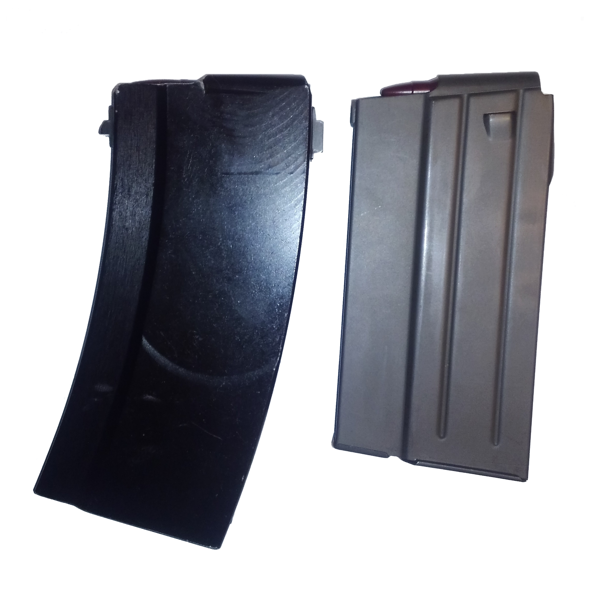

Project List

Problem:
Obviously magazines for the STGW-57 in the US aren't exactly cheap. On top of that, they're not optimized to feed .308 Winchester. This project looks to solve that by providing a cheaper alternative specifically tailored for .308 Winchester. According to others that have .308 conversions, 7.5x55 Swiss magazines seem to work, though I don't personally like it for a couple reasons:
1. The taper of .308 is different than 7.5x55 Swiss.
2. The overall length of the cartridge is much shorter.
These two factors combine to make a less than repeatable presentation of the cartridge. When loaded into the 7.5x55 Swiss magazine, the .308 is forced to follow the curvature of the magazine. The curvature of the magazine is normally dictated by the taper of the cartridge. In the case of an incorrect taper following the curvature, the cartridges aren't going to rest along each other's bodies. In this case of an excessive curvature, the cartridge will pivot about the transition to the neck.
Eventually this leads towards the feed lips of the magazine exerting most of the pressure towards the front of the body of the cartridge, and due to how the cartridge is supported, the body doesn't sit flush against the feed lips and the head of the cartridge is lower at the rear of the magazine. The severity of the angle bewteen the body and feed lips changes depending on how many cartridges are loaded, the more loaded the it is, the greater the angle. This is the first inconsistency in presentation.
The next problem, the overall length of the cartridge being shorter, adds another layer to the inconsistency. The shorter length of the cartridge affects the presentation as since the cartridge can freely slip fowrard changing where the bolt initially contacts the cartrdige during loading. Another effect is that during the transition from the magazine to the chamber, there comes a point where the feed lips stop supporting the cartridge and the rear is free to come up and align with the chamber. If the cartridge is shorter, the feed lips should control the cartdige closer to the chamber to prevent the cartridge from flopping about and not being able to align with the chamber.
Options:
Our options fit into two main catagories, modify an existing magazine or making a new magazine. Making a new magazine in a low quantity and having it be of a good qulaity would most likely make it very expensive due to the amount of set-up required. Next, we could try some modification to the original STGW-57 magazines, though even if that fixes all of the mechanical issues, the base magazines themselves are still expensive. That leads us to modifying another existing magazines.
When choosing a magazine, we have to look for a few properties. The front of the STGW-57 magazine suddenly narrows at the front and has a portion in the trunnion that matches. This restriction either limits our magazine selection or requires a modification to the trunnion. I'd prefer to leave the trunnion alone as much as possible, which leaves us with two main available .308 surplus magazines:
•BM-59 Magazine
•.308 galil Magazine
Comparing the two, the BM-59 magazine is more availble, cheaper and upon inspection generally seems to be better built. Something about the .308 galil magazines, especially their finish, seemed chincy. Once I decided on the BM-59 magazine, I compared the dimensions with the STGW-57 magazine. I'm happy to report that they are absurdly similar. Using digital calipers I found that by comparison to the STGW-57 magazine, the width at the rear is 0.5mm less, front to back it's 0.3mm less and the narrow width at the front is 0.1mm less, I honestly couldn't ask for a better fit. The fact they're all slightly less is good too since we can always add material if we need to, removing from a dimension is obviously a different story with a hollow stamping.
Solution:
Use 3/4" heat resistant o-ring, o-ring kit at https://www.mcmaster.com/o-rings/high-temperature-o-ring-assortments/
To download the PDF/CAD files, click the links below:
PDF Only
ZIP PackageIf you're on a desktop browser you just use the frame below to view/download the PDF.
Disclaimer: I did not make this particular drawing. It was sourced from a publicly listed library for resources related to the STGW-57.